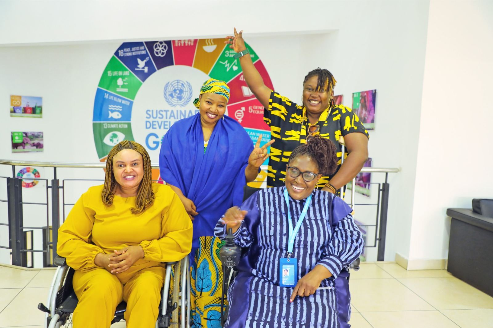
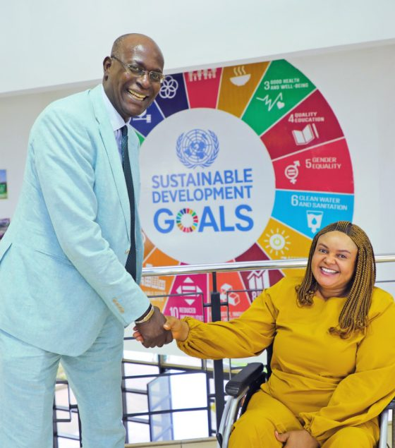

About GDGI
A movement for a greener, fairer, and more inclusive world

Founded on October 24, 2024, the Global Disabilities Green Initiative (GDGI) is dedicated to a profound commitment to inclusivity and sustainability. GDGI works to dismantle the barriers that traditionally segregate environmental initiatives from the rights and needs of persons with disabilities.
GDGI's approach is comprehensive, aiming to weave disability rights advocacy into the very fabric of energy solutions, accessible technological innovation, environmental stewardship, climate action, and sustainable agriculture — creating a more equitable, resilient, and inclusive future for all.
Our Vision
We envision a world where disability is central to sustainability, with every person with a disability actively participating and leading in crafting universally accessible sustainable energy solutions, designing environmental and climate initiatives with inclusivity at their core, shaping accessible and inclusive agricultural practices, and fostering a global network where advocacy for disability rights is seamlessly integrated into strategies for environmental health and agricultural innovation.
Our Mission
To spearhead a transformative global movement that champions disability rights advocacy by delivering accessible technological innovation and sustainable energy solutions, fostering environmental stewardship, driving climate action, and advancing sustainable agriculture for an inclusive future.
How we work
Core values
Accessibility
We strive to make all aspects of sustainability — energy, agriculture, environment, and climate action — accessible and beneficial for Persons with Disabilities, ensuring no barriers exist in participation or benefit from green initiatives.
Collaboration
We foster dynamic collaborations across sectors, cultures, and abilities to innovate, implement, and scale solutions that are both environmentally sustainable and socially inclusive, amplifying our impact.
Empowerment
We empower Persons with Disabilities not just as beneficiaries but as active leaders and changemakers in sustainability, providing them with the tools, education, and platforms needed to drive and shape environmental and social progress.
Equity
We are committed to equity, ensuring that all resources, opportunities, and benefits from sustainable development are distributed fairly, recognizing and addressing the unique needs of Persons with Disabilities within environmental contexts.
Innovation
We champion innovation that transcends traditional boundaries, developing technologies and practices that inherently consider disability, thereby creating solutions that are universally beneficial and promote sustainability.
Sustainability
Our commitment to sustainability goes beyond reducing environmental impact; it includes ensuring that our initiatives contribute to a future where Persons with Disabilities can thrive, promoting practices that safeguard ecosystems for all generations.
Transparency
We uphold transparency in our operations, decision-making, and partnerships, ensuring that our actions are accountable to the communities we serve, fostering trust and a culture of inclusivity and integrity in all we do.
2025–2030 objectives
What we're building toward
- 01Develop and deploy accessible renewable energy technologies for Persons with Disabilities.
- 02Expand educational programs teaching inclusive sustainability practices.
- 03Influence global policies through advocacy to ensure inclusivity in sustainability initiatives.
- 04Foster innovations in agriculture that are accessible and sustainable for all.
- 05Establish innovation hubs focused on integrating disability needs with environmental solutions.
- 06Promote the inclusion of disability considerations in climate action plans.
- 07Enhance networks and community engagement to amplify the voices of Persons with Disabilities in sustainability discourse.
- 08Conduct and disseminate research on the impact of inclusive sustainability efforts.
- 09Advocate for accessible employment opportunities in green sectors for persons with disabilities.
- 10Create enduring legacy projects that support long-term advocacy and education in inclusive sustainability.
Governance & transparency
How GDGI is funded and held accountable
GDGI employs a diverse and strategic funding model that emphasizes transparency, accountability, and sustainability, ensuring the continuation of our mission to empower persons with disabilities through inclusive, sustainable initiatives.
Funding sources
Financial management & accountability
Meet the Board & Advisory Board
Seven Trustees and eight Advisory Board members guide GDGI's strategy and programs.
Organizational Profile (PDF)
GDGI's full organizational profile — mission, programs, and impact.